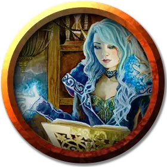

Преобразователь
Transmuter
Средний Гуманоид (Любая раса), любое мировоззрение

Класс Доспеха 12 (15 с доспехами мага)
Хиты 40 (9к8)
Скорость 30 футов
| мод | спас | ||
|---|---|---|---|
| СИЛ | 9 | −1 | −1 |
| ЛОВ | 14 | +2 | +2 |
| ТЕЛ | 11 | +0 | +0 |
| мод | спас | ||
|---|---|---|---|
| ИНТ | 17 | +3 | +6 |
| МДР | 12 | +1 | +4 |
| ХАР | 11 | +0 | +0 |
Навыки История +6, Магия +6
Чувства пассивное Восприятие 11
Опасность 5 (1800 опыта)
Бонус мастерства +3
Среда обитания Город
Особенности
Языки. Любые четыре языка.
Использование заклинаний. Преобразователь является заклинателем 9-го уровня. Его базовой характеристикой является Интеллект (Сл спасброска от заклинания 14, +6 к попаданию атаками заклинаниями). У него подготовлены следующие заклинания волшебника:
• Заговоры (неограниченно): свет [light], починка [mending], фокусы [prestidigitation], луч холода [ray of frost].
• 1 уровень (4 ячейки): цветной шарик [chromatic orb], поспешное отступление [expeditious retreat],* доспехи мага [mage armor].
• 2 уровень (3 ячейки): смена обличья [alter self], удержание личности [hold person], открывание [knock].
• 3 уровень (3 ячейки): мерцание [blink], огненный шар [fireball], замедление [slow].
• 4 уровень (3 ячейки): превращение [polymorph],* каменная кожа [stoneskin].
• 5 уровень (1 ячейки): телекинез [telekinesis]*.
*Заклинание Преобразования уровня 1 или выше.
Камень преобразования. Преобразователь несёт созданный им магический камень, который оказывает на носителя один из следующих эффектов:
• Тёмное зрение в пределах 60 футов;
• Увеличение скорости на 10 футов пока носитель не перегружен;
• Владение спасбросками Телосложения;
• Сопротивление урону звуком, кислотой, огнём, холодом или электричеством (на выбор преобразователя при выборе этого эффекта).
Если преобразователь несёт этот камень и накладывает заклинание преобразования уровня 1 или выше, он может заменить эффект от камня.
Действия
Боевой посох. Рукопашная атака оружием: +2 к попаданию, досягаемость 5 футов, одна цель. Попадание: Дробящий урон 2 (1к6 – 1) или дробящий урон 3 (1к8–1) если используется двумя руками.
Описание
Преобразователи – специализированные волшебники, которые используют изменение, чтобы сменить статус– кво, и рассматривают магическое превращение как путь к богатству или просвещению.